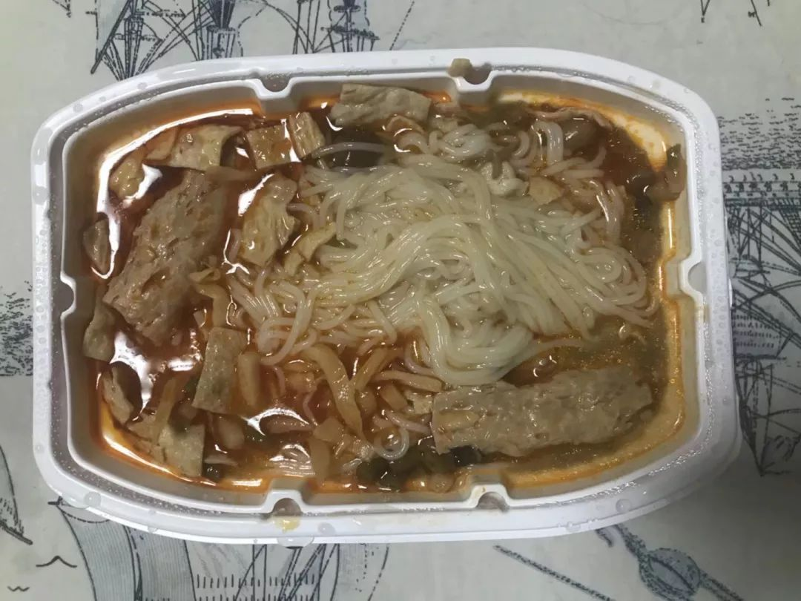
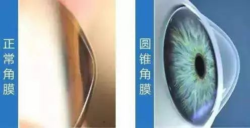
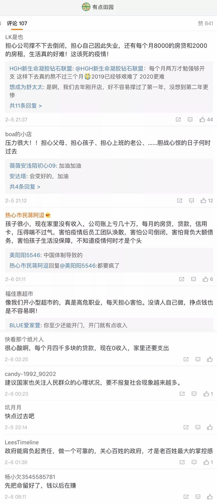
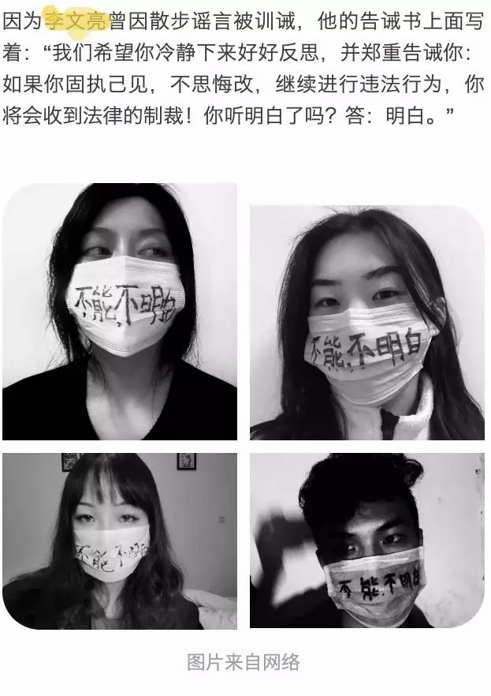
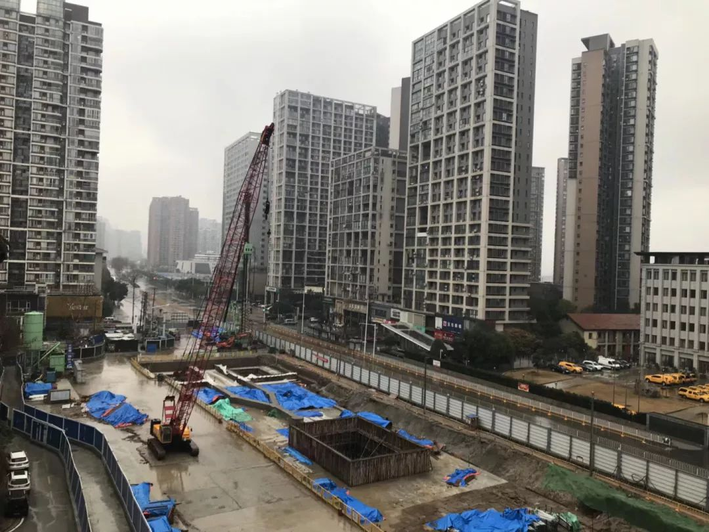
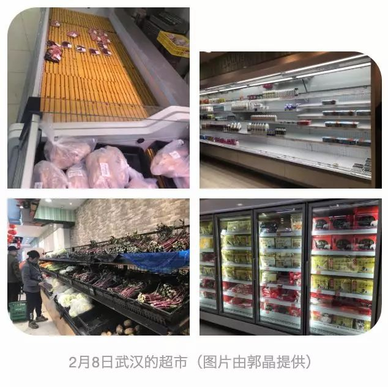
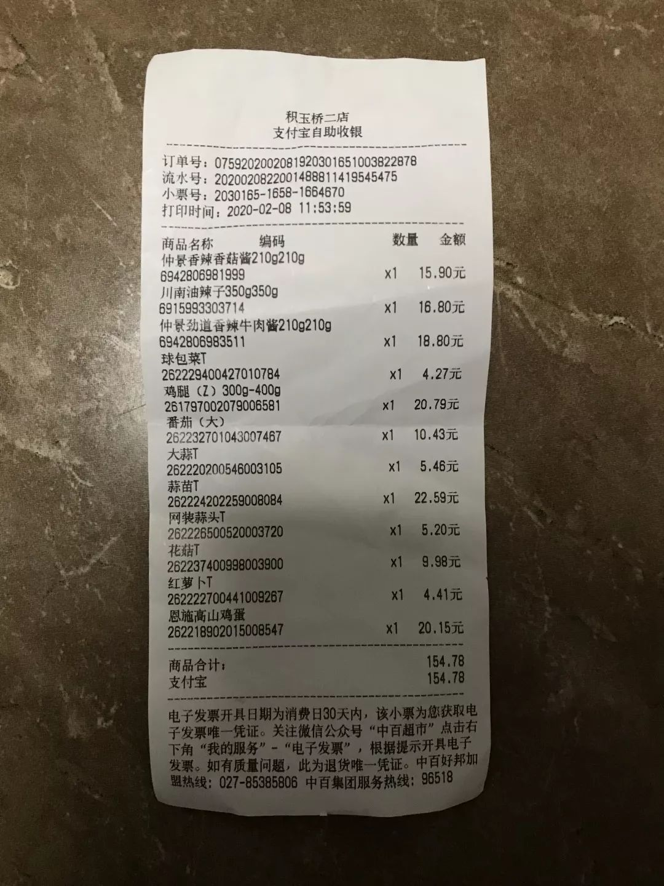

风暴眼中武汉人：我再也忍不住失声痛哭丨人间
原文链接 备份链接 作为风暴眼中的一位普通市民，我在自己意识里构建出的安全感，在生活的随机性前，就如潮水中的沙堡，一下就被分崩离析了。 配图 | B站UP主林晨同学自制视频 征 稿 从2019年12月8日首例武汉新型冠状病毒肺炎患者出现， …

2月5日武汉晒太阳的猫
2月5日
坚持写日记好难。我没有写日记的习惯，长这么大都没有写过一整本日记。我已经很多年没写日记了，写日记的时候也只会记录一些特殊的事情、情绪的波动，很多都没头没尾的，再回头都不记得当时发生了什么。
日常生活有很多琐碎的重复，这些重复会让人觉得无聊，而我们记录下来的东西在某个时期对我们有特殊的意义。
昨天的晚餐是自热的螺蛳粉。

2月4日的晚餐
晚上接着和我的朋友们聊天。
有人想了解大家每天的生活，我觉得这特别不可思议。
有人失眠会起床工作，有人失眠会刷知乎。
有人和家人长达十几天的蜜月期就要结束。
有人看了一本书，其中一部分是女权主义和情感，讲到很多人以为希望是结束痛苦，作者指出：“希望”不是否认当下和过去，而是从现在开始往前走。
面对肺炎，我们不要轻易对别人讲“会过去的”，因为没有那么轻易过去。
有人想到一个自制口罩的方法，是把护垫贴在口罩内侧。
然后，我们聊了“关系”，说到社会鼓励女性要更重视关系，而不是独立，高中女生会一起上厕所，有人说她高中时即便没有入厕需要也曾陪别人上厕所，只是希望通过付出得到对方的认可，以维持关系。
很多人都对和父母的关系表示不满，但也充满无奈。和父母的关系更加特殊，因为这个关系的潜在规范是父母永远不会离开子女，而这对缺乏安全感的人至关重要。
因为我们尚缺乏公共养老，老人也往往只能依靠家庭照顾，通常是子女。这些关系有一定的捆绑性，我们很难选择自己的父母和同学，如果关系出现问题，我们也很难离开。
当我们开始经济独立，开始自己结交志同道合的朋友，从相对平等的关系中寻找情感寄托和接纳，才逐渐摆脱那些捆绑式的关系。

昨晚发生了一个意外。我去年检查眼睛的时候确诊为圆锥角膜。这是一种不可逆也不能治愈的眼疾，要通过戴一种硬的隐形眼镜（RGP）来控制。于是，我花3800买了昂贵的RGP，现在天天戴。
取隐形眼镜要用一个吸棒，昨晚我在取左眼的隐形眼镜的时候，吸了半天没吸出来。我不停地用吸棒吸我的左眼，有很大的吸力，拿出吸棒后总是没有隐形眼镜。之前也出现过类似的情况，但最后还是取出来了。我现在也没法去医院，所以只能耐心地自己取。
可是慢慢地，我开始不确定隐形眼镜是否还在我的眼睛里，因为我的眼睛里充满了泪水，很难判断为啥看不清东西。以往我不小心把隐形眼镜掉在地上的时候都有别人在，有人可以帮我拿眼镜。而现在我必须自己到另外一个桌子上取眼镜，而如果隐形眼镜是掉在地上，我移动就有可能踩到它。
我也别无他法，只能赌一把。我拿了眼镜后在取隐形眼镜的柜子上和旁边找了几遍都没找到，我又扩大范围，最后在大概1米外的地上找到了它。这简直是一个奇迹。

2月5日公园提示
昨天曾举办“万人宴”的百步亭社区多栋小区出现疑似和确诊病例，也有朋友专门发信息提醒我。今天阳光很好，不出门觉得好浪费。早上出门，看到小区的门卫室贴了体温测量点的信息。小区外面有个凳子上绑了一只在晒太阳的猫。
我骑车路过一个被隔离观察的海鲜酒楼。路边停着的我骑了一两公里，都没有遇到环卫工。路过一个湖，我就下车绕着湖走了一会。这里是一个公园，还有地方贴着“入园请佩戴口罩”。
我只遇到了4个人，其中有两个人在湖边认真地讨论着什么，悲伤不由地浮上心头。我以前特别不喜欢人多的地方，节假日的时候都尽量逃到无人的地方。从未想过今天会因为公园人少而感到悲伤。绕到湖的另一边才发现这是我前几天路过的内沙湖公园。

2月5日湖边认真讨论的人
骑车回家的路上，路过了一个顺丰快递点，有人在吃泡面，有人在趴着休息。路上看到一个四美包子店开着门，我赶快停下来过去看了看，里面并没有在营业。
接着我遇到了在工作的环卫工秋大姐，跟她聊了一会。她平常每天6点起床，出去买菜回家，在家里做一些琐碎的家务，然后做饭，吃完饭10点多出门上班。现在早上反而可以睡的久一点，但她每天晚上回家会有84把家里打扫一遍，碗筷也用洗洁精都洗一遍。走的时候我给了她一些口罩，她问我:“你的够吗?”
2月6日
昨天和有点田园一起录的博客发出后，收到了一些微博评论，里面大家充满了各种担忧。有人说：担心公司撑不下去倒闭，担心自己因此失业，还有每个月8000的房贷和2000的房租，生活真的好难！
有人说：已经瘦了6斤多，每天看到疫情数据浑身打冷颤，不管是全国的，还是本省的，或是本市的。很多工薪阶层本来的生活已经十分不易，他们为了生活努力地奋斗，经不起太多的波折。他们本来就没有太多对生活的掌控感，疫情下很多潜在的问题没有公共的解决方案和措施，个体更是无力。
有人说：ZF能肩负起责任，做一个可靠的，关心百姓的政府，才是老百姓最大的掌控感。

有点田园的部分微博留言截图
昨天的晚餐是清炒藕片加稀饭。
晚上照旧和朋友聊天。
有人开始看司考的视频，有人和朋友吃了火锅。
我们继续讨论关系，聊到自我如何在关系中确立，有的父母是用贬低的方式对待小孩，总是否定小孩，这容易让小孩产生自卑，总是怀疑自己好不好，做的事情对不对；有的父母是用鼓励的方式对待小孩，小孩就会比较自信。
有人说自信像是不会枯竭的井，即便别人舀走一些水，它还是会有。我们曾经的生活很窄，关系有限，以为那些关系就是全世界，所以患得患失，只能努力地投入，现在发现建立关系的基础不是投入，更重要的是共同的认同。

2月5日的晚餐
武汉今天下雨了，我终于决定不出门了。早上接到一个网友发的求助，求助者的老公和她的公婆都被确诊为新型冠状病毒肺炎，两个老人已经去世，家里还有两个孩子，一个四岁，一个才一个月。她有疑似症状，现在也在隔离，担心孩子的照顾问题。我打电话过去了解情况，她说孩子暂时有人照顾，可是她的语气充满了忧虑，不确定隔离后的情况，不确定孩子是否能得到持续的照顾。
本想静下来整理前几天对环卫工的访谈，可集中注意力还是有点困难。外面依然是一片寂寥，但我还是时不时地望向窗外，似乎还是心有不甘，在确认某种东西。我尽力打起精神来，哪怕短暂地工作和学习也好，我必须要开始。跑神的时间就想怎么让自己好一些，我存的“奢侈品”里有糖，是那种水果硬糖，可以含在嘴里很久，我拿出一颗含在嘴里，增加一些幸福感。

2月5日武汉一家被隔离的酒楼
2月7日
谣言是什么？这取决于谁来定义谣言，谁有权力裁决，以及如何裁决。
所谓的谣言都需要一个被证实或证伪的过程，不能简单地通过我不认同你说的话来判断。

2月5日门卫室的提示牌
昨天的晚餐是香菇炒肉加稀饭。
晚上继续和朋友聊天，主题是死亡。
我外公外婆前几年先后去世，我现在还时常会梦到他们。因为计划生育，我妈怀了我弟之后，就把我送到了我外公外婆家，直到7岁才回到我父母家，一直到十几岁我每年春节都在外公外婆家过年。
外公外婆很少强迫我做什么事，尽管我在他们的村子并没有同龄的朋友，很多时候都是我一个人看书或是看电视，但我感到很自在。
他们的去世一度是我难以面对的事情，不知道向谁讲述，如何讲述，因为我们没有讲死亡的习惯。我们向即将死亡的人隐瞒他们快要死去的信息；死亡太沉重了，我也不想给别人增加负担。
有个朋友的妈妈已经去世，她说：“我会和我家人讲起我妈，因为她对我很重要，她是持续和我们生活在一起的。”

2月5日武汉内沙湖公园
大家纷纷讲了自己的死亡焦虑：
有人害怕死亡之前的痛苦，
有人害怕“我”的消失和自我意识的消亡，
有人一度觉得睡着的时候很像死亡而不敢睡着，
有人担心死了之后自己的财产怎么处理。
我们聊到很多得了癌症的人依然在为了活着而抗争，有的人还战胜了癌症后活了很多年。
我们讲到疫情中充满了突然而集中的死亡，他们没有葬礼，无法和所爱的人告别，更别说临终关怀。

我躺到床上，眼泪就忍不住地流，一会就哭出了声。我的脑子里充满了“为什么”。不知道后来是怎么睡去的。
早上，我几次醒来翻个身又睡去，并没有睡着，只是不想起来面对。终于我还是起了床，打开手机，满屏都是关于李文亮的消息，有人戴着口罩拍照，口罩上写着“不明白”。

我又开始流泪。我要怎么在如此荒诞的社会生存呢？我还是得努力地活着，这也成为一种抗争。于是我照常做了运动。我没法在家里呆着，就出了门。电梯里贴了抽纸，供人们按电梯用。

管理员略显无奈，说：“这样的事太多了，如果不是工作，我也呆在家里不出来。”
我只得作罢，说：“家里太闷了，我出来走走。”
他说：“注意安全。”
我说：“你也是。”
今天天气是阴冷的，江边的人格外少， 我只看到了两个人，那个可以空手翻单杠的“老人家”也不在。
回到家我点了一根蜡烛来悼念LWL。洗澡的时候，我打开手机，放了《国际歌》单曲循环。然后我放声大哭，这是一种从未有过的悲愤。
2月8日
有人说疫情过去，人们就很快会忘记。遗忘没有那么容易。我们可能无法记得所有人，但我们大部分人都无法忘记这段时间。我们还会跟别人讲起这段时间发生的事情、遇到的人，就像我们讲起非典、讲起汶川地震。我们还会带着这段日子的记忆生活下去。
大家担心的遗忘究竟是什么？是我们的社会不能因为这场疫情而有所改善，是下次发生类似的灾难的时候依然没有完备的防控体系，担心依旧会有人要做无谓的牺牲。

2月6日窗外风景
昨天的晚餐是莴笋炒香肠加稀饭。
晚上和朋友聊天。我们都看到了网上有人发起的祭-奠LWL的活动，晚上8:55-9:00是关灯默哀，9:00-9:05用手中能发出光的所有物件指向窗外，并集体吹响口-哨（或其他发生装置）。大家纷纷下载了whistle的软件，试了之后觉得声音略小，有人找了自制口-哨的视频，尝试自制口-哨，没有成功。
我住的地方外面的楼本来也只有零星的灯光。9点钟，我看到这些楼上一些角落里亮起了微弱的光。那一刻，我们是彼此在黑暗中的光，这是穿破封锁的光。

2月7日晚9点，窗外微弱的光
我们都希望自己能够做更多，可以减少一些悲剧性的牺牲，可是很难。有人提议：不如我们来开个脑洞，如果可以有一个超能力，大家会想要什么样的超能力。
有人说想要“不吃饭不会饿，不洗澡也不会脏”的超能力；有人想要“让人变善良”的超能力；有人想要“作恶会反弹”的超能力，就是如果坏人作恶，他对别人做的伤害行为也会发生在他身上；有人想要《银河系漫游指南》里里的“感同身受手枪”，能让缺乏同情心的人感受到他人的痛苦而减少伤害。
有人指出超能力可能存在很多使用不当的状况。“超能力”是一种权力，权力不被限制会导致滥用。我们知道没有超能力，而我们之所以想要超能力是感到无力。

《银河系漫游指南》截图
愤怒可以给人力量，愤怒往往是因为我们看到了不公。我们谈到让我们感到愤怒的人和行为。
有人说到高中老师曾因为不喜欢某个学习成绩不好的学生，就让全班同学都写这个学生的坏话，通过各种方法赶走他。讲故事的朋友写了那个学生的优点，反而被叫家长。
大家纷纷表示曾遇到过类似的老师，用自己的权力羞辱学生。我们从小就被划分为好学生和坏学生，后来发现这种分化、贬低越来越多，人们之间形成等级，似乎那些被划为低等的、没有权力的人就不配得到尊重。
《黑镜》中有一集是关于一群追杀“蟑螂”的士兵发现他们真正追杀的是人，只是他们被植入一种mass系统，就会把那些所谓有缺陷基因的人看成蟑螂，从而展开猎杀行为。军方通过将一些人异化，用看起来更高的价值正当化自己的杀害行为。
我们都讨厌恃强凌弱的人，喜欢待人真诚，敢讲真话的人。而在大家都不敢讲真话，甚至讲真话要付出代价的社会，讲真话更加珍贵。李文亮是一个讲了真话的人。

《黑镜》截图
我存的菜不多了， 今天要去超市补充一些食材。出门遇到一个建筑工，我跟他搭了话，他是山东人，是修地铁的工人，住在地铁站旁搭建的临时活动房。
超市的人不多，蔬菜还算充足，米面也都还有。肉就所剩无几了，我买了两个鸡腿。超市的工作人员说肉一早开门就被抢光了。酸奶的架子上有点空，洗手液卖光了。今天是元宵节，汤圆倒是很充足。我没有过节的心情，对汤圆也没有特别偏好，就没买。
食上添餐厅应该是在给医院供给食物，有两三个穿防护服的人来取食物，进店之前还用酒精消了毒。一个便利店贴着告示，显示昨天17:00后暂停营业。
天气依然阴冷，12点多要回家的时候，我通过地上的影子发现有阳光，阳光并不强烈，但也很珍贵。

路上遇到之前不愿意透露名字的大姐在清理着路上的积水，她戴着两个口罩，我跟她说不用戴两个口罩的。
她紧张地说：“广播里说这个病传染很严重的，戴口罩都不一定有用。我现在不能出事，不然我儿子怎么办。”
我很难消除她的恐惧，就问：“公司有给你们做一些基本的防护培训吗？”
她说：“没有”。
我给了她一些口罩，她说：“谢谢！”
我问她贵姓，她这次告诉了我她的名字，她姓胡。
她说：“保重！”
我说：“你也是”。
“保重”成了人们日常的祝福语。

2月8日给医院供给食物的餐厅

2月8日购物小票
原文链接 备份链接 作为风暴眼中的一位普通市民，我在自己意识里构建出的安全感，在生活的随机性前，就如潮水中的沙堡，一下就被分崩离析了。 配图 | B站UP主林晨同学自制视频 征 稿 从2019年12月8日首例武汉新型冠状病毒肺炎患者出现， …
原文链接 备份链接 作者 | 薛芳 孙宏超 相欣 安然 马关夏 李越 编辑 | 康晓 出品｜深网·腾讯小满工作室 欢迎下载腾讯新闻APP，阅读更多优质资讯 平平安安就是年。 突袭而至的新病毒能阻止很多中国人在这个春节里团聚，但没有什么能阻 …
原文链接 备份链接 今天，火神山医院正式交付。9天时间，可容纳1000张床位的医院在武汉落成，参照非典期间北京小汤山医院模式，专门收治新型冠状病毒肺炎患者。在医院床位紧缺的情况之下，大家对火神山和雷神山给予了期望，而实际效果如何，能多大 …
原文链接 备份链接 1月31日出门健身的武汉市民（图片由郭晶提供） 这是我的朋友郭晶的日记。 记录了封城期间在武汉独居的外地女性的真实生活体验和心理感受。 这些文字见证了郭晶如何从适应突发危机到重建日常生活，再到尝试帮助他人的过程。 之前 …
原文链接 备份链接 据相关数据统计，春节前，有近500万人离开武汉，他们中有近30%的人离开湖北，他们或出差、或进行计划许久的旅行，或回家过年，但伴随着疫情的加剧，他们成了一群「不被欢迎的人」。 一位武汉的小学老师已经连续三年去厦门过年， …